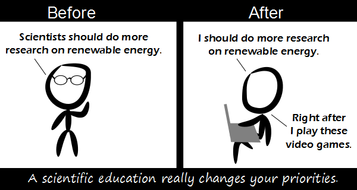

Comic JK 740
When I Feel Like It
⇤
<
?
>
⇥

⇤
<
?
>
⇥
Forum
.
RSS
.
Digg
.
Facebook
.
Reddit
.
Twitter
.
Stumbleupon
Enter your thoughts on number 740 here. Please, no spamming, trolling, phreaking, or not not researching renewable energy. Wait, what?k Ever so true. Engineering educations can be much the same. Though, to be fair, there's not much point in unleashing the engineers on the problem until the scientists give us a positive-energy fusion reactor. We're not going to have enough energy by 2050 in any case unless we develop fusion or solar generators far beyond present capabilities, somehow manage to keep getting enough fossil fuels to last that long (and find a way around the greenhouse gas issue so we don't die in the mean time) or somehow reduce worldwide energy consumption (despite the inevitable development China and India, which is something like 30-40% of the world population). Of those options, fusion is the only thing that's even close to a breakthrough. Solar has, as yet, been a wild goose chase in terms of major power generation, counting on finding 40 years worth of fossil fuel over that period is akin to the "kneel and pray" method of solving one's problems (even if you disregard the pollution issue), and even maintaining current energy use is a pipedream. ^tl;dr ^...lol. I think the author of this comic would have a lot of things to disagree with you about. if "the lights going off" becomes a real problem, we *will* start building more fission stations... whether conventional, or thorium-based "slow breeder" reactors... I heard recently that certain oil wells appear to have increased the pressure (and therefore amount of oil) over the last few years. And even without that, back in 2000 read a discussion about it, and with the oil fields that they knew about and had access to then (they have discovered new ones since then) they estimated that they had enough oil until at least 2400, assuming an exponential increase in oil usage. In fact they found so much new oil that most oil companies agreed to reduce their production of oil so that they could still be making a sizeable profit. After all, market saturation would lead to it being free, which would lead to the companies going broke. >If that were true, the oil companies would be competing against each other, and prices would be much lower. If you had so much more then demand, and your competitor was selling it at the same price, you could sell it for less to sell more. That would generate more profit. >>nope - selling it for less would likely cause the competitor to cut prices too - both sell more and make less profit... >>>This cartel would have to be both wider and more effective than OPEC, and yet be completely secret - and allow the price of oil to fluctuate +/- $40 per barrel, which doesn't help profits at all. I think the volatility in supply and price is more consistent with a loss of natural reserves, as happened to the US in the late '60s. >>>>there need not be "a cartel": the economics of oligopoly can produce a similar result *without* any collusion - they compete more or less, but also recognise that all-out price war undermines the long-term viability of each competitor... come to think of it, there's an analogy to the cold war there... I'm going to read all these comments and write a few paragraphs explaining some of the common misconceptions about renewable energy and exposing clear arguments for and against each energy source. Right after I play these video games (TF2 mostly). ---- Pastebin link for some php code I just wrote in a couple minutes that generates a ComicJK archive, it loads all the pages in order so its a little slow, but it works. pastebin.com/mw0kFshm (I advise saving the result of it if you want an archive)